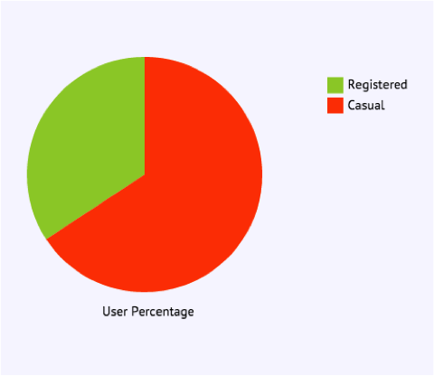

We chose to do a close analysis on the Boston Convention and Exhibition Center. White, the color of the circle, represents less than 20% full. Because the total capacity at that station is 19, Hubway should add more bikes to this station permanently so more people can come here. This station has a capacity of less than 20% for a long period of time, as seen by the brush.


Also, at this time there are more casual users than registered users. As a result, we can suggest to Hubway to have a helmet station because causal users would be less likely to bring a helmet than registered users.

There are also more older age people at this station, and more males in general. As a result, Hubway can target promotions towards this demographic at this station.